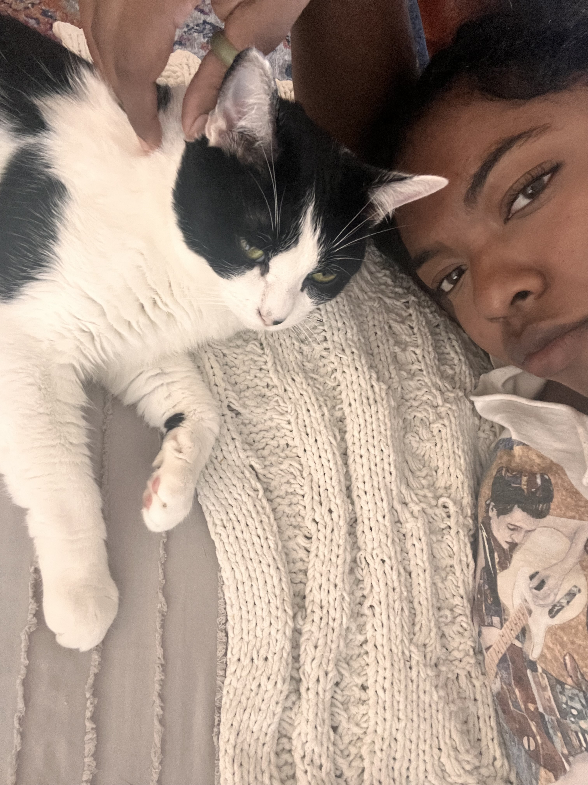
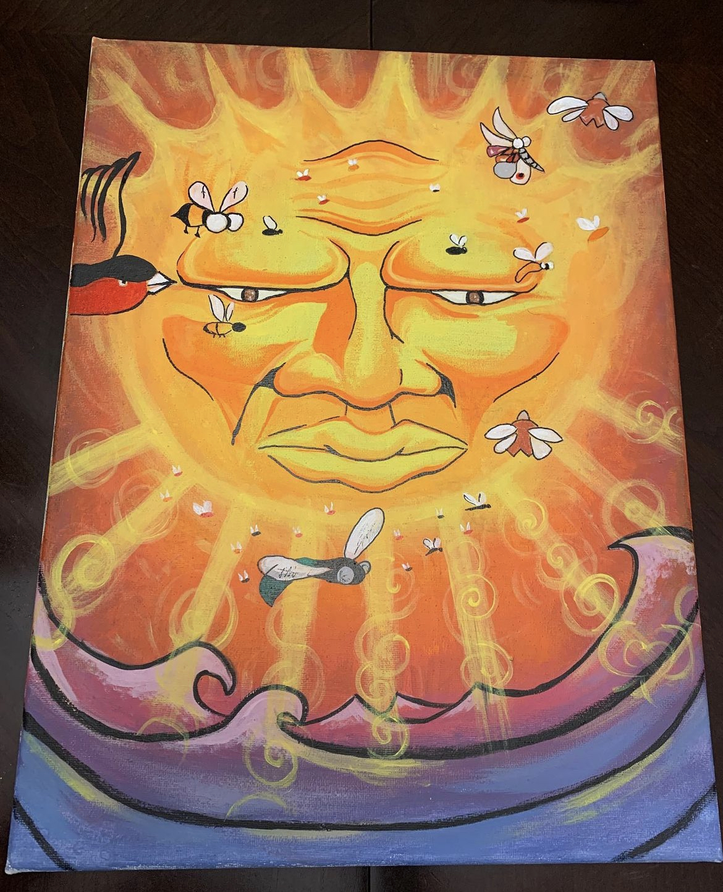
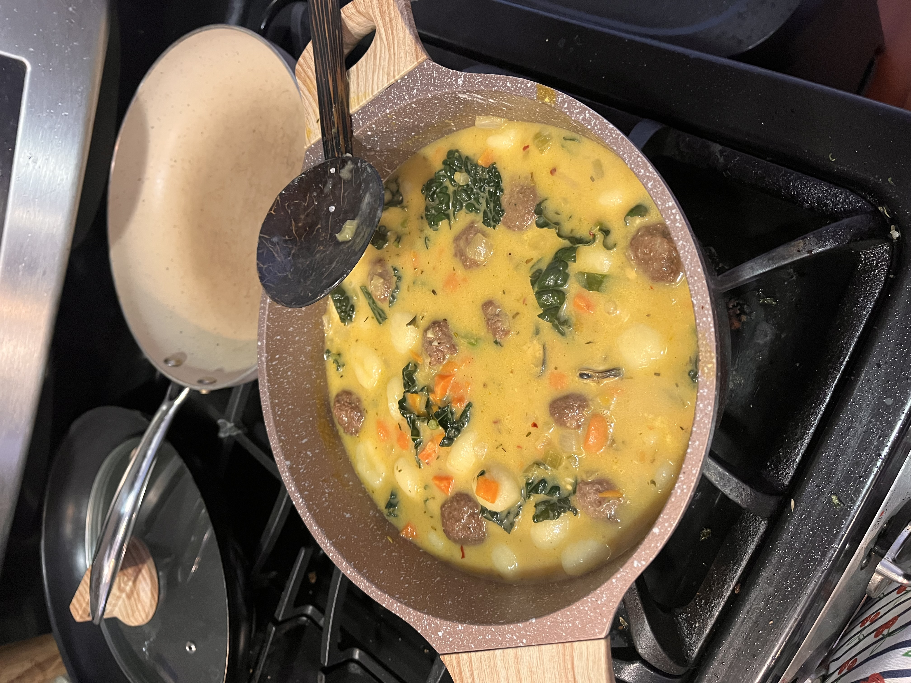
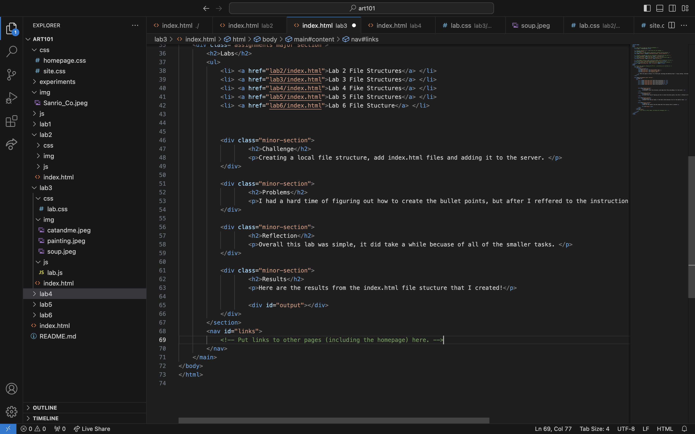

Soriah Aniff
  Hello! My name is Soriah, I'm a third year sociology and education major. I enjoy cooking, rollerskating and creating art in my freetime. Oh, and I love cats!
Labs
- Lab 2 File Structures
- Lab 3 File Structures
- Lab 4 Fike Structures
- Lab 5 File Structures
- Lab 6 File Stucture
Challenge
Creating a local file structure, add index.html files and adding it to the server.
Problems
I had a hard time of figuring out how to create the bullet points, but after I reffered to the instruction examples, I was able to figure it out for myself.
Reflection
Overall this lab was simple, it did take a while becuase of all of the smaller tasks.
Results
Here are the results from the index.html file stucture that I created!
